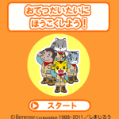

<!-- main -->
<div id="main">

  
  <div id="kyouzai">
  <h3>おてつだいたいにほうこくしよう！＜ＮＥＷ＞</h3>
<br />
  <p>＜NEW＞6月号でお手伝いを教えてくれたにゃみえも新登場！しまじろうの新しいメッセージも。</p>
  <p>お手伝いプログラム「しまじろうの おてつだいたい」の活動の一環として、お手伝いをしたことを電話でおてつだいたいに報告するコンテンツです｡しまじろうたちメンバーからの応援メッセージを聞くことができます。メッセージを話すメンバーは交代で出てくるのでお楽しみに。</p>
<p>「きみはどんなお手伝いをしたの？」というメッセージをなげかけてお子さんが自分がやったお手伝いを言うように促します。言い終えたら、数字キー「5」の決定ﾎﾞﾀﾝで次に進みます。<br />
※音声つきです。マナーモードを解除してお使いください。
<div><a href="src/step_1105_1_android.swf" data-role="button" data-theme="e" rel="external">ダウンロード </a></div>
  </div>
 
  
</div>
<!-- /main -->
